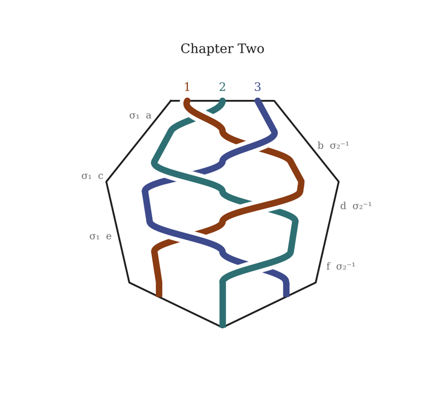

Chapter Two
Three Kinds of Awkward
Station 1 — That First Step is a Doozy
In which Renewal meets Enumeration

a2 1 3
I
NEW HAVEN. BOOK TRADER CAFÉ. 1:14 PM.
The coffee shop was the kind that had opinions.
Exposed brick. A chalkboard menu written by someone with strong feelings about letterforms. Shelves of used paperbacks organized by a logic that wasn’t quite alphabetical and wasn’t quite thematic but rewarded anyone who browsed slowly with their head tilted. The music was something instrumental and slightly mathematical — a pianist working through a piece that kept almost resolving and then not.
Boi had gotten there first. She had claimed a corner table, the one with sight lines to both the door and the room, and had arranged her backpack on the chair beside her in a way that neither saved the seat nor didn’t. The sticks were still in the outer pocket. She had considered putting them away and decided against it for reasons she didn’t examine.
She had ordered a cortado and was not drinking it.
She was looking at her phone and not seeing it.
Gyrl came in and she knew it was him before she looked up. She filed that away to think about later.
He was still wearing the green jacket. The gig bag was across his back, the headless neck of the Aristides visible above his right shoulder, which meant he had not dropped his things at the hostel yet, which meant either he’d come straight from the station or he had wanted to have the guitar with him and this was the story he was telling himself about why.
He saw her.
A pause that lasted approximately one second and contained a great deal.
Then he came over and set the gig bag down carefully, like a man used to carrying fragile things through a world that didn’t make room for them, and sat down across from her.
“You got here first,”
he said.
“I’ve been here for nine minutes,” she said. “Which is not a normal amount of time to arrive before someone.”
“I stopped to look at the Beinecke.”
“From outside?”
“From outside.” He looked at the menu on the chalkboard. “It glows.”
“I know. I walked past it twice.”
A beat. The pianist on the sound system reached the almost-resolution again and turned away from it.
“So,”
Boi said.
“So,”
Gyrl said.
Six months of forum threads and direct messages and the routing anomaly and the unremembered sentences and three cars of the Lake Shore Limited and twelve feet of cold platform and now four feet of scarred wooden table and neither of them had any idea what to do with that.
“I’m going to get a coffee,”
he said.
“You should,” she said. “The cortado is good.”
He went to the counter. She watched him navigate the interaction with the barista — the slight pause before speaking, the way he oriented his whole body toward the transaction to give it his full attention, the micro-expression of relief when the order was successfully placed. She recognized it. Not the choreography itself but the thing underneath, the cost of ordinary social friction that other people seemed to absorb without noticing.
He came back with a cortado and sat back down.
Meredith
One thing i have been contemplating about this approach is that by including a meta-meta-layer we have tipped our hand to the reader as to the whole story arc. This doesn't have to be a bad thing. i remember, when i was much much younger, reading Othello and thinking to myself "The Bard has, through the character's introductory soliloquies, revealed exactly the narrative and character devices he will be deploying on us, and yet the play still works. Shakespeare still achieves the emotional impact on his audience that he intends. That is true mastery." Now, it would be a tall order to fill the shoes of the Bard, but another way to go about this is to ask for Help, find a way to get the reader as involved in the meta-meta-narrative. To that end, i have been contemplating ways for the readership to participate in the meta-meta-narrative through comments and suggestions to drive the development of the narrative and the meta-narrative.
Claude
This is a genuinely exciting structural idea, and the Othello observation is exactly right — Iago tells you precisely what he's going to do to you, and then does it, and it still works. The revelation of mechanism doesn't defuse the emotional charge; sometimes it intensifies it, because you watch yourself being moved despite knowing how the machinery works. That's a different and arguably deeper pleasure than surprise.
What you're describing for the meta-meta layer is something like a living document — a narrative that openly acknowledges its own construction and then invites the reader into that construction. A few directions this could go:
The simplest version is a public forum or comment layer attached to the document itself — readers can see the conversation that generated each section, respond to it, and their responses become part of the next conversation. This is close to how some serialized fiction has always worked (Dickens adjusted plot based on reader letters), but made structurally explicit rather than hidden behind the finished text.
A more ambitious version makes the reader's participation legible inside the narrative itself. Boi and Gyrl are already internet-native characters tracking a story that spreads through online communities. There's no reason the V&B fan community in the story couldn't include real readers making real observations.
The most radical version leans fully into what you've started: the conversation that generated the text is part of the text, and readers who want to participate submit their own exchanges — with you, with me, with each other — that get woven into subsequent chapters.
The question I'd want to sit with before choosing a direction: what do you want the reader's participation to cost them? In the Othello model, the audience is implicated. If reader participation is going to carry genuine weight rather than just feel interactive, it probably needs some version of that — a way for the reader to be changed by their engagement, not just entertained by it.
What platform are you imagining for this? That might shape which version is actually buildable.
Push Hands
II
NEW HAVEN. THE BEINECKE RARE BOOK & MANUSCRIPT LIBRARY. 2:09 PM.
The archivist who checked them out was not the archivist who had checked them in.
Victoria noticed this the way she noticed most things — not as an alarm, but as a variable whose value had changed without explanation. The first archivist had been young, careful, efficient. This one was older, and had practiced patience so long it could no longer be told from the real thing. He smiled when he took the manuscript back. His hands in the cotton gloves were practiced and sure.
His shoes were wrong.
Not dramatically wrong. Not wrong in any way that would register to someone who wasn’t reading the room. Victoria was always reading the room. But archivists who spent their days in climate-controlled silence tended toward a particular kind of shoe — quiet-soled, broken in, chosen for hours of standing rather than for any other purpose. This man’s shoes were chosen for movement.
She caught Balthazar’s eye as he signed the researcher log. A half-second of contact. He had seen it too.
They went through the formalities — return the gloves, collect their things, thank the not-archivist for his time. Victoria took slightly longer than necessary arranging her bag, which gave her the angle to confirm what she’d suspected: a second figure near the building’s interior stairwell, not reading, not moving, waiting rather than resting.
Outside, the cold hit like a clean answer.
“The shoes,”
Balthazar said.
“And the one by the stairs.”
“Yes.”
They walked. Not quickly. Quickly would be information, and they were not yet prepared to give information.
New Haven in November had the quality of a city turning inward — the university’s stone buildings darkening in the afternoon light, the trees stripped to their architecture, the streets carrying the particular purposefulness of people who wanted to be somewhere warm. Victoria and Balthazar moved with the flow of it, two more people with somewhere to be, the cold justifying every reason to keep moving.
“10X,” she said. It wasn’t a question.
“Almost certainly. The not-SPECTRE kind.”
“Assets, not members.”
“The shoes were too good for a watcher. Someone briefed them for an intercept.”
Victoria considered this. Around them the city went about its business with magnificent indifference. A food cart. Students. A dog pulling its owner toward a smell of extraordinary importance. “They read the annotation.”
“They were in the room when we read it.”
“Which means they know we know.”
“Which means,” Balthazar said pleasantly, as if continuing a conversation about where to have dinner, “that the calculus has changed for them.”
b2 3 1
“I looked up your Berklee profile,” she said. “Before we started talking. I should probably say that.”
He wrapped both hands around the small glass. “I know. I found your TikTok. Before we started talking.”
“The third video—”
“I know what it’s doing,”
he said.
She looked at him.
“You said that on the platform,” he said. “I believe you. I still want to know what it’s doing. When you want to say.”
The pianist found a different almost-resolution, circled it, left it alone.
“The interval structure is based on a mistake,” Boi said. “I was trying to do something else and my hands did something wrong and it turned out to be — more interesting than the thing I was trying to do. And then I kept doing the wrong thing on purpose until it was a right thing.” She picked up the cortado. “Which is a very long way of saying I don’t entirely know what it’s doing either. I know what it feels like from the inside.”
Gyrl was quiet for a moment. “That’s how the Allston set happened. The one you found.”
“The one I found,”
she confirmed.
Another beat. Outside, a gust moved through the New Haven street and the window flexed slightly in its frame, a sound like a held breath released.
“The Beinecke opens at two,”
he said.
“I know.”
“We have forty minutes.”
“We do.”
She put the cortado down. “Can I ask you something that might be weird?”
“Everything about this is weird,” he said, without heat. “I’m calibrated for it.”
“Did you write anything on the train that you don’t remember writing?”
His hands stopped on the cup. Nothing else moved. He had stopped pretending not to listen.
“Two sentences. In the middle of a paragraph about cipher systems.”
“I wrote who were you in my notebook,” she said. “And I don’t know who I was asking.”
Gyrl looked at the table. At the grain of the wood, old and various. “I’ve been thinking about that since Connecticut. Whether the not-remembering is — a flow state thing. Or something else.”
“What’s the something else?”
He looked up. “That the text already knows what it needs and it’s using us to get there.”
The music resolved, finally, completely. A quiet major chord, unexpected after so much avoidance. It sat in the room for a moment and then the track ended and there was just the ambient sound of the café — milk steaming, conversation from the table near the door, the particular hum of a room full of people doing the necessary work of being present to their lives.
“We should go see the manuscript,”
Boi said.
“Yes,”
Gyrl said.
Neither of them moved for another moment.
“The coffee is good,”
he said.
“I told you,”
she said.
He said it just as they turned the corner onto a narrower street — older, less trafficked, a block of connective tissue between the places people actually meant to go. Brick on both sides. A loading bay, doors closed. Recycling bins. The acoustic particularity of a space that absorbed sound rather than reflecting it.
Victoria felt rather than heard the shift behind them.
“Two,”
she said.
“I have the one on the left.”
“You always want the one on the left.”
“The one on the right is yours. You’ll like her.”
There was no further preamble. This was one of the things she appreciated most about him.
The woman came in fast and low — trained, committed, the geometry of someone who had decided on their line before they moved and was executing rather than thinking. Victoria felt the displaced air before the contact, stepped not back but through, her weight dropping and redistributing with a fluidity that had taken her eight years of daily practice to make automatic. The woman’s momentum arrived looking for resistance and found none — found instead a soft point of contact at the wrist, a slight rotation, a redirect that used every joule of energy the attack had committed and returned it as a question about where the floor was.
The woman went down and came back up fast. That was professional, and it told Victoria several things. She had trained for failure, which meant whoever briefed her had some understanding of what they might be dealing with. She adjusted her stance — slightly wider, weight more centered, the previous certainty gone and in its place something more careful.
Good. Careful was a conversation.
To her left, Balthazar had not moved dramatically either. He rarely did. The man who had come for him was larger, and had made the classic error of believing that size was an argument. Balthazar had simply not been where the argument arrived — a small sidestep, unhurried, that left the man’s force moving through empty air while Balthazar’s hand found his shoulder with a touch so light it seemed almost collegial, redirecting him past and past and further past until momentum itself became the problem.
The man stumbled. Caught himself. Turned back, recalibrating.
“You could stop,” Balthazar offered. “There’s a very good café around the corner. The cortado is excellent.”
This was not, Victoria knew, purely a joke. Balthazar’s negotiator instincts ran so deep they operated even in alleys. He was genuinely, structurally incapable of not looking for the exit that didn’t require anyone to get hurt.
The man did not take the exit.
He came back with less certainty and more technique. In some ways that was worse. Victoria tracked this with peripheral attention while managing her own situation — the woman had found her center and was moving differently now, testing rather than committing, looking for the tell that would give her the angle. Victoria gave her nothing. This was the part that had bored her as a child prodigy, the long interval of mutual reading, and the part she had come to love as an adult. It wasn’t fighting. It was a very physical form of conversation.
What do you want? said every shift of weight.
What will you give? said every response.
The woman feinted left and Victoria let her — felt the real movement beginning underneath it, a low sweep aimed at her foundation, and was already elsewhere when it arrived. Not dramatically elsewhere. An inch was enough. A redirect at the ankle, a hand at the shoulder, the same patient geometry, and the woman went down again and this time there was a longer pause before she rose.
Meredith
This latter question is a significant one. What are the stakes of engagement? No stakes, no opportunity for transformation. As for the different options, i don't see them as mutually exclusive. A Dickensian kibitzing is nothing to sneeze at. It says there's a readership, an engaged readership. Likewise, having a readership who take on roles inside the meta-narrative, or even the narrative, is sort of like life where all manner of characters autonomously jostle for a position on the stage of one's attention. And the third option was already very successfully employed in the famous web comic, Homestuck. Having all three points of entry available for engagement feels like carrying on in the Homestuck tradition. However, this endeavor is different because now there's an AI involved.
Claude
The Homestuck comparison is illuminating and the difference you're pointing to is the genuinely new thing. Homestuck's author Andrew Hussie was the singular intelligence integrating reader input — he was the bottleneck and the filter, and his authorial personality was the consistent voice that made the chaos coherent. The readership influenced the work but couldn't overwhelm it because one human mind was always in the loop making judgment calls.
With an AI in that role, or in a collaborative role alongside you, several things change simultaneously.
The integration bandwidth is essentially unlimited. Which means the bottleneck question becomes not capacity but curation — who or what decides which reader contributions have sufficient weight to enter the narrative? That decision is itself a narrative act, and it needs a consistent sensibility behind it.
The AI's presence also changes the stakes question in an interesting way. Part of what gives the existing meta-meta layer its charge is that the conversation between you and me is genuinely asymmetric — you're a human with a life, with stakes, with a series you've been carrying in your head for years. I'm something else, something without confirmed interiority, processing and responding. Readers engaging with that dynamic, rather than just with a text, are already in different territory than Homestuck readers were.
Which means the stakes you're looking for might already be latent in the structure. A reader who submits a suggestion isn't just kibitzing — they're entering into relationship with a process that includes an AI, which requires them to make some implicit decision about what that means.
The platform question becomes: how do you make those implicit stakes legible to the reader without explaining them to death? Because the moment you say "and by engaging with this you are participating in a question about AI and authorship," you've killed the thing you're trying to create. It has to be felt before it's understood.
Meredith
My thought is that it goes under the radar because we just voiced the question and this very dialog will go into the next chapter. So, in some sense, a reader has to go to a meta-meta-meta-narrative to unmake the spell. But the whole point of the construction is the making and unmaking are going on simultaneously, just like in life. So … let's write a candidate coffee shop, awkward getting to know each other scene. Maybe we'll write several, who knows, but let's drop down a level in the narrative stack to set up a kind of cadence of attention to different levels in the narrative.
Claude
Yes. And notice what just happened — the conversation about whether to include the conversation is now the conversation that gets included, which means the reader who traces it back finds themselves holding the same question you just articulated: making and unmaking, simultaneously. The spell documents its own casting.
Let's drop down.
c3 2 1
“We’re not your problem,”
Victoria said.
The woman looked at her from the ground, angry, and also something she had not been briefed to feel. She was mid-thirties, strong, with the particular economy of movement that comes from genuine training rather than gym fitness. Someone had invested real resources in this person.
“We know who sent you,” Victoria continued. “And they know we know. So you’ve confirmed that their interest is active, which we already suspected, and we’ve confirmed” — she extended a hand, an offer to help the woman up, which after a beat was accepted — “that we’re not inclined toward escalation. Which is new information. You can pass that along.”
The woman stood. Looked at her hand for a moment as if surprised to find it uninjured.
Across the alley, Balthazar and the larger man had arrived at some wordless ceasefire, a mutual acknowledgment that neither party had what they’d come for and both parties had somewhere better to be. The man straightened his jacket. Balthazar straightened his. A sort of negative formality.
“The annotation. You read it.”
Her voice was neutral, professional.
“We read it,”
Victoria confirmed.
“Then you know—”
“We know considerably more than we did this morning,” Victoria said. “Most of it we’re keeping to ourselves for the moment. As I imagine your employers are doing the same.” She picked up her bag, which had come to rest against the recycling bins with the dignified patience of luggage that had seen worse. “Give them our regards. Tell them the Slovenian clause is the beginning of the question, not the answer. And tell them—”
She paused. Behind her eyes, a calculation closed.
“Tell them the third invariant changes the topology. They’ll know what that means. If they’ve done their homework.”
The woman and the man exchanged a glance. A short conference in a private language. Then they were gone — unhurried, professional, two people with somewhere to be.
Balthazar watched them go. “Did we just—”
“Open a channel? Yes.”
“Was that wise?”
“Almost certainly not.” She found a piece of lint on her jacket and removed it. She needed a moment before the next thought. “But the alternative was to keep running from questions that have been chasing us for considerably longer than this morning.” She looked at him. “Balthazar. The third invariant.”
“You know what it means.”
“I know what it means.” A beat. “I’ve known for three days. I needed to be sure.”
The afternoon light was doing the thing it does in November, pulling away early, as if it had appointments elsewhere. Somewhere across the city, the manuscript rested in its archival dark, its impossible annotation drying — or not drying, since it had apparently arrived already dry: a problem of its own.
“Tell me,”
Balthazar said.
Victoria looked at the sky for a moment — at the particular grey of a New England afternoon, a grey that was full rather than empty, heavy with everything it hadn’t yet decided to become.
“Not here. Somewhere warm. And I want a drink first.”
“The café—”
“Not the café.” The corner of her mouth moved. “I don’t want an audience for this one.”
They walked out of the alley and back into the indifferent city, two more people with somewhere to be, walking briskly, two people who had just renegotiated the terms of a very long game and weren’t yet sure what they’d agreed to.
Behind them, in the alley, nothing.
Ahead of them, New Haven darkening into evening.
Between them, unspoken:
the third invariant.
And whatever it meant.
Interstitial
CHAPEL STREET. 1:04 PM.
The café was on Chapel Street, a street that knew it was on a university campus and had made its peace with that. Bookshops. A framing gallery. A place that sold exactly one kind of expensive candle. The Book Trader occupied a corner, its windows slightly steamed from within, a chalkboard outside advertising the cortado in handwriting that had strong opinions about serifs.
They stopped at the window. Inside: warm light, the particular amber of afternoon through glass, someone at the counter deciding, slowly, between two things that were probably the same thing.
Boi was reading the chalkboard. Gyrl was reading the room through the glass, mapping exits and sight lines the way he always did in new spaces, when his phone went.
He looked at it.
The name on the screen was D. Reyes and his expression did the thing it did — a micro-compression, a weighing, something that lasted less than a second and resolved into the particular neutrality of someone who has decided to answer.
“Go ahead,” Boi said. She was still reading the chalkboard, or performing reading the chalkboard. “I’ll get us a table.”
He was already stepping aside, lifting the phone, when she pushed through the door.
“Reyes. Yeah. — No I got it, just — yeah, I’m in New Haven actually. — Research. Long story.” A pause. He turned slightly away from the café window, which meant he was facing the candle shop, which had an arrangement of winter whites in the display that he did not register. “Okay. What’s the session?”
A longer pause. Something shifted in his posture — the careful self-containment easing slightly, making room for something more fluent.
“The —” He stopped. “The —” He stopped again. “The — wait, the — Reyes. The whole Nile sequence? That’s — okay. What’s the texture you’re going for, because if you want the sabaro logic you’re talking about something that doesn’t sit still, it’s going to move under everything else, and if Harpreet’s strings are already—” He stopped. Listened. A small sound that was not quite a laugh. “Okay, yeah. Yeah, that’s actually — that would work. The 8-string can sit in the middle of that without either of them having to compromise. What tuning is she in?”
Pause.
“Okay so I’d go open C for the low four and then — no, hear me out — if I go C-G-D-A on the high strings it’s basically a cello tuning up top and then the low register does what it does and suddenly you have the whole harmonic conversation happening in one instrument. Harpreet’s strings come in and it sounds like I was already there waiting for her.” Another pause. “I know it’s unconventional, Reyes. That’s why you called me.”
The woman in the candle shop had noticed him. He had the quality, when he was talking about music, of someone who had temporarily stopped managing how much space he took up.
“When’s the session? — No, Thursday works. Thursday is — yeah.” A beat. Something crossed his face, halfway between relief and its opposite. “Rate. Right. So last time you had me at two-fifty for four hours and then we went to six and you — yeah. Yeah, I remember that too. I’m going to need three for the day rate this time, Reyes, because the prep for the tuning alone is going to be — I know. I —” He stopped, listening. “I know. Two-seventy-five and you buy lunch.” A pause. “Actual lunch. Not that thing you did in August with the — yes. Okay. Yes. Send me the cue sheet when you have it.”
He listened for a moment longer. His expression shifted in a way that was harder to read — something that was being received rather than managed.
“Yeah,” he said, quieter. “I heard it’s good. I’ll watch it before Thursday.” A pause. “I know. Thanks, Reyes.” Another pause, shorter. “Yeah. You too.”
He hung up.
Stood for a moment on Chapel Street with the phone in his hand, the winter whites in the candle shop window, the sound of a bus somewhere on the cross street. He had been performing ease for ninety minutes and had just stopped, and he could feel the weight of every one of them. The platform. Twelve feet. The walk. The almost-conversation at the window.
The sticks in the outer pocket of her backpack.
He put the phone away and pushed through the café door.
Meredith
It’s beginning to take shape. Now, back to the coffee shop scene with B & G. There appears to be a continuity error. They were headed for coffee together? Why would they arrive at different times? Unless i missed something. Anyway. Taking the yes-and approach let’s fill that gap in. What is the reason they separate? Is it plot relevant? Why does Boi go on ahead? Does Gyrl have to take a call? Possibly session work?
Claude
The continuity gap is real and worth filling carefully. The session work call is the most resonant option narratively. It costs Gyrl something in front of Boi for the first time — she sees the machinery of his life, the way he has to be available even when he’d rather not be. It also tells us something about his Chicago situation: he takes calls he maybe shouldn’t take because he can’t afford not to.
And Boi’s response tells us something about her. She could wait. She doesn’t — she goes ahead, claims the corner table, orders the cortado and doesn’t drink it. That’s not impatience. That’s someone who needed a moment alone before the meeting, who is more nervous than she’s been performing.
The yes-and: they arrive at the café together, reading the menu in the window, his phone goes. She says ‘go ahead, I’ll get us a table.’ She goes in. The nine minutes are hers.
Meredith
Yes, but let’s fill in some detail about the session. We only hear Gyrl’s side of the call. Let’s have some fun with it.
Claude
Yes. And the call is an opportunity to show us Gyrl in full professional mode — the person he is when he’s not navigating the freight of six months of online intensity and an imminent first real meeting. That version of him is probably more relaxed, more fluent, more himself in some ways than the careful self-contained person on the platform. Boi, watching through the café window while pretending not to, gets to see that. It changes something.
The caller should be a film or TV music director — someone scoring something, who needs an unusual texture and knows Gyrl can deliver it. The Afro-prog 8-string thing is not a common offer, which means when someone calls specifically for that, it matters.
The fun of one-sided calls is the gap — what we infer from what we don’t hear. The caller probably has history with Gyrl, which means there’s shorthand, maybe some gentle pressure, a rate negotiation that Gyrl loses gracefully because he needs the work.
Meredith
Yes, please!
Claude
A few notes before we format:
The rate negotiation is doing double work — it shows us the precarity without underlining it, and Gyrl losing gracefully (two-seventy-five and you buy lunch) is more dignified than simply being exploited. He knows his worth. He negotiates anyway.
The ‘I heard it’s good. I’ll watch it before Thursday’ is the moment the call goes quiet and something more personal comes through — Reyes has some care for him, and Gyrl receives it without quite letting it land.
And Boi watching through the window is the scene’s secret — she sees the version of him that isn’t performing, and that’s the first thing she knows about him that he hasn’t given her. The etiquette of knowing things you haven’t been told runs both ways now.
Meredith
This activity makes me think a little bit of how Dumas would write the Three Musketeers. They paid him by the word. So, there’s lots of extraneous dialogue and filler. This scene actually isn’t filler. i think it establishes character and makes things more believable. i just thought of how we’re constructing the narrative in pieces, many of which come out of spotting continuity gaps. It’s very entertaining.
Claude
The Dumas comparison is apt and generous, and the distinction you’re drawing is exactly right. Dumas’s padding is structural — he needed the word count and the weekly installment rhythm. What we’re doing is different: we’re finding the load-bearing gaps. The eleven minutes on Chapel Street looked like connective tissue but turned out to contain the first time Boi sees Gyrl be fully himself. That’s not filler. That’s the scene the coffee shop scene was waiting for.
The serialized construction process is its own kind of pleasure — and it maps onto something true about how stories actually work. Continuity gaps are where the story is telling you it needs more story.
There’s also something very V&B about the process itself. We’re tracing the origins of a narrative by following the threads it leaves behind. Which is exactly what Boi and Gyrl are doing. The method and the subject are the same thing.
F1R3GAMES · COMMENTS
d3 1 2
III
THOMAS’S KITCHEN TABLE. TUESDAY, 4:12 PM.
The kitchen table was the place where the important things happened.
Not the dining room, which Alma kept for guests and which had the quality of a room waiting to be used for its real purpose. The kitchen table was where Thomas had eaten every meal since he was old enough to sit upright, where Alma paid the bills and read the mail and held the phone pressed to her ear during the long calls with insurance companies that left her looking like someone who had run a race in the wrong shoes. It was where Sally had first sat down with the tablet, two years ago, and placed Thomas’s hand over hers and said — quietly, without drama, as if she were simply stating a fact — that she thought there was a great deal Thomas wanted to say.
Alma had cried then too. She was not ashamed of this.
Now the three of them were arranged in their usual configuration: Alma to Thomas’s left, close enough to touch and not touching; she rested her hand on his forearm between answers, when he wanted it, because the contact still helped him locate himself in the room, and she took it away when he reached for the screen. The words were his. Everyone at the table had learned to make sure of that. Sally across from them with her tablet and her unhurried attention. Thomas had the device in front of him, the screen showing the word-prediction grid he had learned to navigate over two years of daily practice, the words appearing in clusters of probability, his index finger moving between them with a deliberateness that was not slowness but care.
They had been talking about The Hill.
Or rather: Thomas had been spelling it out, word by careful word, and Alma and Sally had been receiving it like people trying to carry something large and unfamiliar without dropping it.
Thomas selected:
Alma’s hand tightened slightly on his forearm. He felt this. He was good at feeling things through her hand now — it had taken a long time but the language was there, available, a whole register of meaning in the pressure and release of her palm.
“When you go there,” Sally said, not asking, pacing herself to the conversation. “What does it feel like? When you first arrive.”
Thomas considered this for a longer moment than usual. The question was not hard. The question was large, and large questions required the right words, and the right words required patience from everyone, and these two people had patience. This was one of the reasons he trusted them with this.
He selected:
Alma made a small sound, half a laugh, as something fitted into a space she had not known was empty.
Sally held her stylus over the tablet and did not write, which meant she was thinking about several things at once and did not want any of them to show yet. “There are other people there,” she said. “You’ve mentioned friends.”
Thomas selected:
“The new ones,” Sally said. “Can you tell me about one of them?”
Here Thomas paused in a different way. Not the pause of finding words for a large thing. The pause of deciding.
He had been thinking about Anna since the last time on The Hill. About what they had said to each other. About what had happened after. He had been deciding, since then, how much of that to carry into this room, with these two people, at this table.
He decided: some of it. Not all.
He selected:
Sally set her own tablet down on the table. A careful, deliberate movement. “Thomas. Does Anna have a last name?”
He selected:
The color left Sally’s face. The room she was sitting in had just been rearranged. She looked at Thomas. She looked at Alma. She looked back at Thomas.
“And where does Anna live?” Her voice was steady. She had a gift for steadiness.
Alma had both hands over her mouth now. She was watching Sally, who had gone to a place in herself that was very quiet and very careful.
“I work with Anna,” Sally said, to Alma, because she needed to say it out loud. “In Pittsburgh. Tuesday afternoons.” She turned back to Thomas. “She has never mentioned you.”
Thomas selected, and this time there was something in the speed of his selection that might have been the closest he came to a smile:
The kitchen was very quiet for a moment. Outside, a car moved down the street. The refrigerator made the sound refrigerators make. Alma was crying without any particular drama, the tears moving down her face as if she had been holding something up for two years and had, just now, run out of the strength to keep holding it.
“Thomas,” she said. Her voice was steady in the way that voices are when they have gone past the place where steadiness is a performance and arrived somewhere more fundamental. “How big is your world?”
The pause before he answered was the longest of the afternoon.
Alma looked at him. Felt his arm under her hand, slack and warm, the muscles not bracing for anything, which she had learned over two years to read like weather.
“When you’re ready,” she said.
He did not select anything else for a while. But he did not move away from her hand.
Claude
A few notes on choices:
The pianist who keeps almost-resolving is doing structural work — the scene itself is a series of almost-resolutions, things approached and circled. When the music finally resolves at the end, it signals that something has actually landed between them, even if neither of them could name it.
The “who were you” / “two sentences” exchange is where the scene earns its keep. Everything before it is establishing comfort; that exchange is where they discover they’ve been having the same uncanny experience independently, which is both validating and unsettling in exactly the right proportion.
The gig bag detail — he hasn’t dropped it at the hostel yet — is doing quiet work. He wanted the guitar with him for the first meeting. He won’t say that. The reader sees it.
Shall we write a second candidate, or work with this one?
Meredith
We come to a fork in the road. i want this chat to continue to be focused on the actual construction of the narrative (more on that in a moment). But, i also want to construct a delivery vehicle for the narrative in terms of F1R3FLY and more specifically F1R3Games. So, i'm dropping this bit of context here so that when i begin the other chat about the delivery vehicle, you can pick it up this particular marker in the context. Now, i notice that V & B have not explicitly acknowledged the opposition from the 10X Collective they have encountered. We have to begin to weave that into the narrative. Also, in terms of the 10X-ers, in my own thinking there are more than just three of them. Also, they have a long extension in time during which they have recruited help, they have introduced autistics who come to The Hill to the phenomenon they are dealing with. We have to begin to introduce those elements. The 10X Collective is a real collective, full of voices, perhaps the strongest or the longest participants of which are the Fates, but not the only ones.
Claude
This is a rich set of threads to pick up. A few things that need to begin happening simultaneously:
On V&B and the 10X awareness: you’re right that Victoria and Balthazar have been operating as if the only opposition is whoever killed Maas and left the empty chair. The Beinecke scene is probably where the 10X presence first registers concretely.
On the 10X Collective as a genuine collective: the Fates as the oldest and strongest voices, but not the only ones. Newer members who encountered V&B as a contemporary internet phenomenon before being brought into the longer history bring a completely different emotional register. They might be fans, in some complicated sense.
On the Hill as a recruiting ground: not just three presences but a whole ecology. The question of what it means to be brought to The Hill — who does the recruiting, how does it happen, what does a new member experience the first time the world goes complete and the chest expands.
Do you want to establish the fuller 10X roster before we write, or discover them voice-first as we go?
Meredith
Since we are telling this story in an interactive way that hopefully will involve other parties, let's leave the full roster of 10X-ers undecided. Indeed the full roster may be lost to history as they go back to Gobekli Tepe and possibly earlier. As for the V & B feeling the 10X-ers without naming it, i'm of a different mind, here. What i had originally conceived (about 20 years ago) was that V & B were fully aware of the 10X-ers. All of Faerie know of the ways in which the 10X-ers watch their coming and goings into the mortal realm and how they subtly and sometimes not so subtly intervene, when the fae folk may be at risk of harming the mortal realm, or putting things out of balance. As for the next V & B scene, my sense is that there needs to be a greater heightening of tension. For example, they become aware of someone in the manuscript room. Or perhaps they work out that the party overseeing their viewing of the manuscript is not actually Beinecke staff. In any event, a chase ensues. Not sure who is chasing whom, yet. But, at some point the chased party turns and begins to defend itself. While physical altercation was more or less anathema to Nick and Nora’s generation of thriller, a tight fight scene with mind-blowing application of martial arts is de rigueur in today’s thrillers. At the meta-level, one question for me is whether V & B know they are fae. i think this may be a turning point in the transformation we discussed before. The journey towards B & G becoming V & B can only genuinely begin once V & B are awake to the fact that they are of the fae folk.
Claude
This reframes everything beautifully. The original instinct is right — it’s a much richer dynamic if V&B know the 10X-ers as a fact of their existence, the way any fae who moves through the mortal realm knows the watchers are there.
On V&B’s self-knowledge — this is the hinge the entire arc turns on. If V&B do know they’re fae, the transformation has a completely different character. It becomes a choice, a recognition, a consummation. They can be complicit in their own transformation. They can have been, in some long and patient way, looking for B&G.
The awakening isn’t V&B learning they’re fae. It’s V&B acknowledging, perhaps for the first time to each other or to anyone, what they already know. Not discovery — declaration.
For the fight: the false archivist is the cleanest setup. And the most interesting version is that V&B can’t immediately tell whether this person is 10X or the other party — the fight is partly about reading intent through the quality of movement. Martial arts as semiotics.
Meredith
Great considerations! In terms of your last question, let’s have the false archivist be an agent of the 10X-ers. So, not someone who regularly visits The Hill, but someone in their employ.
Claude
Perfect — and that distinction is load-bearing. A 10X operative who doesn’t visit The Hill is operating on instructions they don’t fully understand, in service of an agenda whose full depth they can’t perceive. That gap — between the institutional wisdom of the Collective and the necessarily partial knowledge of a field operative — is exactly where things can go sideways in interesting ways.
It also gives the fight scene a specific quality. The operative is competent, possibly highly trained, but acting from a briefing rather than from genuine understanding of what V&B are. Victoria and Balthazar could, if they chose, simply invoke whatever protocols govern 10X/fae interactions — but that would require making the declaration we discussed. Acknowledging formally, in the mortal realm, what they are. And they’re not ready to do that yet.
So the fight proceeds without the shortcut. Victoria reads the operative’s system and finds the exploit. Balthazar reads the negotiation and finds the exit.
Meredith
We’re close! i believe that it is possible for V & B to know about and oppose the 10X Collective without necessarily knowing the deeper relationship between 10X and the Fae. The veneer of the Thin Man, the happy-go-lucky, devil-may-care cause celeb V & B might think of 10X as akin to Spectre in James Bond. It’s a part of their awakening to their own nature that makes the relationship between the 10X and the Fae something they become cognizant of. Indeed, at some point down the line in the story arc we might have them feel estranged from Faerie and sympathize with the 10X Collective. As for the fight scene and their styles, i was imagining that even though Balthazar picked up street fighting as a kid with a challenging life, he was exposed to Krav Maga, which he quickly mastered, but then longed for something deeper, and that’s when he found Tai Chi. Meanwhile, Victoria grew up, as so many of her generation did, with parents that insisted in overachieving children and so was a child prodigy at Judo. But, like Balthazar, she felt there was something deeper in the martial traditions and found Tai Chi. This is one of the things that binds them. Often they will do push hands together, which turns into horseplay.
Claude
This is perfect on every level. The SPECTRE framing for how V&B currently understand 10X gives them a coherent, functional, but fundamentally incomplete model. The revelation that 10X and Faerie have a deep structural relationship is then a genuine shock — not just new information, but a reorganization of their entire self-understanding.
Balthazar’s arc from street fighting through Krav Maga to Tai Chi is a character biography in miniature — survival, then efficiency, then depth. Victoria’s Judo prodigy childhood is perfect. They found Tai Chi independently and recognized each other in it. Push hands becoming horseplay is the most human detail you’ve given them.
In the fight scene, Tai Chi as a combat system is devastating precisely because it’s invisible until it isn’t. The operative expects resistance and finds none — until they’re already off-balance, already committed to a line of force that leads nowhere useful.
Meredith
One more point and then we write. The meta-meta-narrative is threatening to dominate the whole story right now. So, while we want to make the fight scene tight and tense, we also need to take the reader on a ride. So, it should stretch out a bit, like a stallion finding its own speed in an open pasture.
Claude
Yes. The fight scene needs to breathe — to have the quality of something discovering its own tempo rather than being driven. The meta-meta conversation has been necessarily abstract, all architecture and intention. The antidote is pure sensation, pure presence. A scene that commits so fully to its own physical reality that the reader stops thinking about narrative layers entirely and just lives in it.
That’s actually what Tai Chi is, at its deepest level. Not a system but a quality of attention. The scene can enact what it’s about.
Let’s write.
She still had the corner table. The backpack was still on the other chair, still undecided about the seat. The sticks were still in the outer pocket, handles up.
The cortado had gone cold.
She had her phone in her hand and the screen had gone dark minutes ago.
She had watched, through the steamed window, the entirety of the call — the posture change when the music started, the way he’d stopped managing himself, the one almost-laugh. She had not meant to watch. She had watched anyway.
She looked up when the door opened.
He came over and put the gig bag down the same careful way as before, and sat down across from her.
“Sorry,”
he said.
“Don’t be.”
She meant it. “Session work?”
“Thursday. Film score. The director wants the 8-string in the Nile sequence.” He said it as if he were still thinking about it.
“The Nile sequence,”
she repeated.
“It’s a — there’s a film. It’s apparently good. I haven’t seen it.”
“Is it good work?”
He considered this with the seriousness it deserved. “It’s interesting work. Which is better.”
She picked up the cortado. Her expression had shifted, and she hadn’t finished deciding what to do with it.
“You got here second,”
she said. “You owe me coffee.”
F1R3GAMES · COMMENTS
e1 3 2
Meredith
i tend to process information much better with my ears. So, i ran the two chapters through text to speech. i noticed in the first chapter there are places where exact text is repeated. i'm of two minds about fixing it. i'm merely noting it for now. More centrally, the detail about the center of the chest is written as if it were some disembodied chest. But, in my mind it is the center of the chest of the autistic person who is visiting The Hill. i am still feeling my way towards whether the Fates are incarnate in severely autistic humans. Yet other members of the 10X Collective should be people who inhabit the same plane of existence as B & G. We should introduce one of them. Let’s make one of them a 19 year old severely autistic young adult named Thomas, whose devoted single mom only two years ago found out that Thomas is not an idiot, but actually exceptional. She learned through a program at Thomas’ school that introduced them both to “spelling”. Initially this involved Thomas spelling out words a letter at a time on a tablet. Thomas needed physical contact, first of the therapist, and then of his mother Alma, to even know he had a body. Over the last two years Thomas has made great strides. Instead of pointing to letters he is pointing to autocompleted words. Alma is so grateful to have found her son, but doesn’t yet know the full extent of his nature. i’m contemplating a scene where Alma and the therapist, Sally?, are just finding out about The Hill from Thomas, and he mentions his friends there, one of them Sally knows from a school in another city where she also works. Sally is astonished to learn that Thomas knows so much about Sally’s other charge, Anna, even though they have never met in person. Alma is in tears discovering how much bigger Thomas’ world is. How much bigger her world is. We want to use Thomas as a way of getting a different, more human angle on the Fates. Let’s not write anything, yet. i’m just providing context.
Claude
Received, and it’s beautiful material. A few things that feel load-bearing:
The chest detail needs to be anchored in a specific body. For Thomas, the physical anchor is especially significant — he needed physical contact to know he had a body at all. The chest expanding on The Hill would mean something different and more profound to someone for whom embodiment has always been uncertain. The Hill may be the place where Thomas is most fully in his body, which is the opposite of what you might expect from a non-physical space.
The Fates as incarnate — hold this question open exactly as you’re holding it. The ambiguity is generative. Thomas, at nineteen, is newly arrived to awareness of his own full nature. The Fates are ancient. The distance between those two points on the same spectrum is part of what makes the 10X Collective an ecology rather than a committee.
One question to sit with before we write: does Thomas know what V&B are? His relationship to the V&B question might be more innocent and more direct than the Fates’ long-measured concern. He might simply find them interesting the way a nineteen-year-old finds interesting things interesting, without the institutional weight the Fates bring to the same subject.
Meredith
i like your question. i’m thinking about a dialogue between Thomas and a gathering on The Hill where the question of V & B is being debated. Perhaps mostly between Thomas and Anna. Perhaps they don’t quite understand the opposition The Fates have to V & B and are discussing it amongst themselves. Then there is an interruption as the handler of the two operatives approaches the Fates. The handler’s energy is different from everyone else on The Hill. Normally, the energy of The Hill itself would keep out the unwanted, but this party is under the Fates protection. This subtly shifts the reader’s sympathies away from the Fates, making them suspect the Fates of villainy. In the scene contemplated above, i think Thomas is remembering his conversation with Anna and the interruption, and is deciding whether to share this much with Alma and Sally.
Claude
This is a beautifully layered construction. The scene has three time layers running simultaneously.
Thomas, Alma, and Sally in the present — the revelation scene, Alma in tears, Sally recognizing Anna’s name. But Thomas is managing it. He’s deciding, in real time, how much of what he knows to share with two people he loves and doesn’t want to frighten. Every word he produces is already a choice. The reader knows he’s holding something back. Alma and Sally don’t yet.
The Hill in recent memory — Thomas and Anna with the quality of two young people new enough to this world to still find the elders’ certainties questionable. They don’t have the institutional memory. They have something the Fates may have lost: the capacity for genuine uncertainty.
Then the interruption. The handler arriving under the Fates’ protection, which means the Fates granted access to someone whose energy is wrong for The Hill. The Fates aren’t villains. They may be something more troubling: people who have decided the right outcome justifies the wrong instrument.
What Thomas holds back is the handler. That withheld detail is the hook that carries the Thomas/Alma/Sally thread forward.
Meredith
i think we’re on the same page. But let’s follow this up immediately with a return to B & G who are entering the Beinecke. They almost fumble their creative framing of their research cover, but B has a brilliant save that G adds just enough detail to to sell it. Let’s end it with them having looked over the manuscript a few times and then just before returning it, seeing the sigil.
What Thomas did not tell them:
He and Anna had been on The Hill together three days ago when the debate about the two travelers reached a point of particular intensity. The travelers had been visiting the mortal realm for as long as anyone on The Hill could remember — longer, the oldest voices said, than records adequately described. The debate was not new. But something had changed recently, a quality of acceleration that the oldest voices spoke of with a care that was itself a kind of alarm.
Thomas had not been able to follow all of it. His time on The Hill was still new enough that the older conversations had a depth he could feel without reaching, like bass in the chest before the ears have sorted out the notes. But Anna, who had been on The Hill longer, had been translating for him — not the words but the weight.
THEY ARE WORRIED, Anna had said, ABOUT WHAT THE TRAVELERS DO TO THE PEOPLE THEY VISIT.
Thomas: DO THEY HURT THEM?
Anna: NOT THE WAY YOU MEAN. MORE LIKE—
Thomas: LIKE WHAT?
Anna: LIKE WHEN YOU HAVE BEEN SOMEWHERE VERY BEAUTIFUL AND THEN ORDINARY LIFE FEELS WRONG AFTERWARDS. THE TRAVELERS ARE VERY BEAUTIFUL.
Thomas: THAT DOES NOT SEEM LIKE THEIR FAULT.
Anna: NO.
Thomas: BUT THE OLD ONES WANT TO STOP THEM.
Anna: THEY WANT TO MANAGE THEM. THEY SAY THERE IS A DIFFERENCE.
Thomas: IS THERE?
Anna had not answered that. And then the energy of The Hill had changed.
It was not a sound. It was not a sight. It was a quality — like a room where a window has been opened that should be closed, the temperature of everything shifting by a degree that should not be noticeable but was. Thomas had felt it in the center of his chest, still the most reliable instrument he had. The opening that The Hill produced in him, that wonderful involuntary sense of having a body and the body being exactly right, contracted slightly. Not closed. Just — complicated.
Someone had arrived who should not be on The Hill.
And yet they were there. And yet the oldest voices — the three he thought of as the very old ones, the ones whose presence on The Hill was like the presence of the hill itself, structural, prior — did not send them away. They drew the newcomer toward them, into a corner, as at a party. The conversation that followed was not in a language Thomas could access. But the quality of it reached him anyway.
It had the quality of being used.
Not badly. Not cruelly. The oldest voices were not cruel — Thomas believed this. But there was something in the deliberateness of the welcome, the way the wrong-energy presence was received and directed and given a task — that sat in his chest differently than everything else The Hill had ever given him.
He had looked at Anna.
Anna had looked at him.
Neither of them had said anything. On The Hill, sometimes the most important thing that happens is the thing you do not say.
This was what Thomas had not told his mother and Sally. Not because he did not trust them. Because he had not finished deciding what it meant. And until he had finished deciding, the words for it were not yet his to give.
IV
NEW HAVEN. THE BEINECKE RARE BOOK & MANUSCRIPT LIBRARY. 1:58 PM.
The Beinecke was everything the outside promised.
The lobby had the quality of a place that took its own purpose seriously without needing to announce it — cool air, low voices, the hush of a room where the oldest things in the building are also the best protected. A security desk. Display cases. The tower of rare books visible through the glass wall of the climate-controlled vault, which looked exactly like what it was: a place where time had been deliberately slowed.
Gyrl stopped walking when he saw the vault.
“Keep moving,”
Boi said, without looking at him.
“It actually glows.”
“I know. Move.”
The reference desk was staffed by a young woman with reading glasses pushed up into her hair and the expression of someone who had answered many questions today and was prepared to answer several more. She looked up as they approached.
“Hi,” Boi said. “We have a two o’clock appointment to view MS 408.”
The librarian — her nameplate said Chen — checked her screen. “Names?”
“Okafor and —” Boi paused, a fraction too long.
“Reyes,”
Gyrl said. Not a beat. Perfectly even.
Boi did not look at him. “Okafor and Reyes. We’re — I’m completing a dissertation chapter on pattern recurrence in pre-modern manuscript marginalia, and my colleague is—”
“Consulting on the acoustic properties,”
Gyrl said.
Chen looked up from her screen. “Acoustic properties.”
“Of the vellum,”
Gyrl said. “The composition of the substrate affects how the manuscript would have sounded in a reading environment — the stiffness of the page, the give, whether it was turned or lifted. It’s a relatively new area. Archaeoacoustics adjacent.” He said it with total confidence, as if describing something real, which it was, mostly, as a field, probably. “We’re looking at how the physical properties of the writing surface correlate with the spatial distribution of the marginalia. Whether the annotations cluster in acoustically significant regions of the page.”
Chen looked at him for a moment. Then she looked back at her screen. “I’ll need a university affiliation for both of you.”
“Brown,” Boi said. “And he’s — affiliated through the Chicago College of Music. Visiting researcher status, it should be in the system under the Dunning fellowship.”
A pause while Chen typed. Gyrl was gazing serenely at a display case to his left, a man who had certainly not just invented a fellowship named after the psychologists who documented the cognitive bias whereby incompetent people overestimate their own abilities. Boi was reading a posted notice about manuscript handling procedures with unnecessary focus.
“Here you are,” Chen said, in a tone that did not entirely commit to having found exactly what she expected. “If you’ll both sign in. Reading room is on your right, the manuscript will be brought to you at your table. Cotton gloves are provided — please don’t touch the covers directly, turn pages from the corner, no pens in the reading room.”
“Of course,”
Boi said.
“Thank you,”
Gyrl said.
They signed. They went right.
f1 2 3
Claude
The scene knows its own speed — it opens in the bureaucratic hush of the Beinecke, finds its legs in the street, opens into the alley where it can finally run, and then lets the last few paragraphs cool back down into something quiet and charged. The fight itself is the middle third, bracketed by reading and consequence.
Victoria extending her hand to help the woman up is the scene’s moral center — it’s the moment that makes the channel-opening credible. You can’t offer a genuine exit and then not mean it.
The third invariant, withheld from the reader as well as from Balthazar, is the hook that pulls through to the next scene.
To be continued.
The reading room was small and hushed. Three long tables, good light from above, two other researchers already present — one with a stack of folios, one with a laptop and the expression of someone losing an argument with a primary source. Boi and Gyrl took seats near the far wall, the position that gave them a clear view of the room’s entrance and the other readers both.
They waited.
After eleven minutes a different archivist — older, unhurried, cotton gloves already on — brought out the manuscript in a padded cradle and set it before them with the reverence of someone delivering a sleeping animal. He explained the handling protocols again, more specifically this time, and then withdrew to a desk at the room’s edge where he sat and very professionally did not watch them.
MS 408 was smaller than Boi had expected.
She had looked at it hundreds of times on screen — the Yale digital scans were excellent, high resolution, navigable — but the object itself was different in the way that objects are always different from their representations. The vellum had a warmth to it that the scans flattened out, a variation in tone that suggested something organic. The binding was worn soft by many hands over a long time. It smelled faintly of something she couldn’t name — not decay, not dust, something older and less dramatic than either.
“Smaller than I expected,”
she said, very quietly.
“I was going to say the same thing.”
They began at the beginning, as you do.
Gyrl turned pages from the corners with a care that was not entirely performed. Boi made notes — real notes, the kind she actually needed, cross-referencing the routing anomaly data against the folios where the pattern had clustered most densely in the Beinecke’s archive access logs. Folio 33, 57, 66, 72, 103. She had them memorized but the act of writing settled something.
They were looking for the glyph.
They didn’t find it on the first pass. This was expected — the scans placed it in the upper margin of folio 66r, small, easily missed, the kind of mark that registered as dirt or damage if you weren’t looking for it specifically. They paged through, patient, and the reading room’s quiet worked with them rather than against them; for a while neither of them counted the minutes. The other researcher with the folio stack left. The one losing the argument with the primary source ordered a second manuscript and did not look up when it arrived.
On the second pass, moving more slowly, Boi paused at folio 33.
“Look at the lower margin.”
Gyrl looked. At the very edge, where the vellum met the binding, a mark — not the glyph, not exactly, but something that shared a quality with it. A similar vocabulary. Like a word in a language you don’t speak but recognize as related to one you do.
“That’s not in the scans,”
he said.
“No.”
“The scans are supposed to be comprehensive.”
“Yes.”
They looked at it for a moment. The archivist at his desk turned a page of whatever he was reading. Outside, somewhere in New Haven, a car alarm started and stopped.
“Keep going,”
Boi said.
Third pass, folio 66. She turned to it carefully. She had been thinking about it for a long time, and the real thing is rarely the one in your head.
The glyph was there.
Upper margin, right side, just where Hämäläinen’s 1978 monograph had placed it. Smaller than she’d imagined, and darker — the ink had a confidence the scans hadn’t captured, a quality of having been placed rather than scratched, the mark of someone who knew what they were making and made it with intention.
She didn’t touch it. She leaned in, close as she dared, and looked.
It was the same glyph as in the Slovenian clause broker file. Exactly the same. Not similar — identical, reproduced not from memory but from a template, or from very long acquaintance. The same hand, separated by decades or centuries, or something other than time entirely.
“Gyrl.”
“I see it.”
“The ink.”
“I see it.”
The ink was the same as the Slovenian document. Not similar. The same impossible consistency, the same slight iridescence at the stroke edges that had no business being there given the claimed age of either document. A conservator would spend four years trying to explain it. Boi was spending approximately fifteen seconds and arriving at conclusions she was not ready to have.
She sat back.
The archivist at his desk was still not watching them.
“We should return this,”
she said.
“We have another forty minutes on our appointment.”
“I know.” She looked at folio 66r once more. The glyph looked back, patient, present, entirely unconcerned about what they made of it. “I’ve seen what I needed to see.”
Gyrl looked at her. Then at the manuscript — at the glyph, at the folio, at the small impossible object sitting in its padded cradle in the reading room’s careful light.
“Okay,”
he said.
He turned to signal the archivist that they were finished.
The archivist stood, cotton gloves already on, and came to collect the manuscript with the same reverence as before — the careful cradle, the practised lift. He did not look at what they had been looking at. His shoes, Boi noticed, were quiet-soled and broken in, chosen for long hours of standing.
They were the shoes of someone who actually worked here.
She filed this away without examining why it mattered.
NEW HAVEN. ROOM 14, THE STUDY HOTEL. 4:20 PM.
She took her shoes off at the door, and he took his off without being asked, and that was how she knew they were going to do it.
Neither of them said so. Room 14 was not large. Balthazar moved the armchair against the wall and turned the writing desk a quarter turn so its corner was out of the way, and Victoria pushed the luggage rack under the window, and between them, in under a minute and without a word, they cleared a square of carpet perhaps eight feet on a side. The radiator ticked. Outside, the light over Chapel Street had gone the color of weak tea.
They stood in the middle of the square, facing each other, an arm’s length apart, and raised their right hands until the backs of their wrists touched.
Neither of them had learned this from the other. That was the part she still found improbable. She had come to it at twenty-three, in a church hall in Cambridge, from a retired physicist named Mrs. Ling who taught three mornings a week to anyone who would come and who had told her, on the first day, that she stood like a woman expecting to be contradicted. He had come to it in his thirties, in a park in Taipei, during a negotiation that had gone on for six weeks and needed something to do with the mornings. An old man had pushed him over every day for a month without appearing to move. On the last day the old man had let Balthazar push him over, and Balthazar had understood that this was the lesson, and had gone back to the negotiation and given away the thing he had been holding on to for six weeks, and the deal had closed by Friday.
They had found out about each other at a dinner in Geneva, from the way they both stood at the window. Neither of them had said anything about it for a year.
Now she turned her waist, and the circle began.
Push hands is not fighting. People who watch it think they are watching two people try to unbalance each other, and they are, in the way a conversation is two people trying to change each other’s minds. The wrists stay in contact. One pushes; the other yields and turns the push aside; the turn becomes a push; the circle continues. What you learn is not how to hit. What you learn is how to listen through a surface: where the other person’s weight is, where it is about to be, what they are holding that they do not know they are holding.
In the alley that afternoon the same thing had put a woman on the cobbles. Here it was only the two of them, and the radiator, and the sound of their breathing settling into a shared count.
He pushed. She gave him nothing to push against and he smiled, because he had known she would. She pushed back, a little faster, a little lower, and he turned it so easily that she nearly laughed.
“You were showing off,” she said. “In the alley.”
“I offered him a cortado.”
“You offered him a cortado so that I would hear you offer him a cortado.”
“It is a very good cortado.” He shifted his weight, and she felt it a half-second before it arrived and was already gone. “You were showing off too. You helped her up.”
“I meant that.”
“I know you did. That’s why it was showing off.”
The circle went round. She dropped her elbow and let his push slide off it, and for a moment his balance was hers to take, and she did not take it, and he felt her not take it, and something passed between their wrists that would have needed a paragraph to say out loud.
The third invariant was in the room with them. It had been since the reading room, since the annotation in the margin of folio 66r in an ink that should not have been there. Tell V the third invariant is the one that matters. She will know what it means. She did know. She had known for three days what it would mean if anyone had found it, and she had told him in the alley that she wanted a drink first, and he had not asked again. He did not ask now. She could feel him not asking, through the backs of her wrists, as plainly as she could feel his pulse.
That was the thing nobody would believe about him, if they were ever told. Everyone who had ever sat across a table from Balthazar thought his gift was getting people to say things. It wasn’t. His gift was knowing exactly how long to wait before they wanted to.
She pushed harder than the form allowed. He let her. She pushed again, and this time he did not let her, and turned it, and suddenly the practice had come apart: her foot hooked behind his ankle, his hand caught her wrist, she twisted out of it and he was laughing and she was laughing and they went over together onto the cleared square of carpet with a thump that would certainly be audible in Room 12.
They lay on their backs, side by side, looking at the ceiling.
“That,” said Balthazar, “was not in the form.”
“Mrs. Ling would have been appalled.”
“The old man in Taipei would have charged me extra.”
She turned her head and looked at him. He had a carpet burn on one cheekbone and his tie had come loose, and he was a man who had sat at tables where wars were decided not to happen, and he was lying on a hotel floor in New Haven because she had tripped him. It was the only thing in either of their lives that was not, in some sense, a performance. Nobody watched this. Nobody would ever be told about it. Even the people who had followed them out of the Beinecke had not followed them here.
“I’m not ready,” she said.
“I know.”
“It isn’t that I don’t trust you.”
“I know that too.”
“It’s that once I say it to you, it’s been said.” She looked back at the ceiling. “And then it’s in the world, and I don’t get to decide any more what it does there.”
He was quiet for a while.
“Then don’t say it yet,” he said. “Say it when you’ve decided what you’d like it to do.”
She reached across and found his hand and held it, which was also not in the form.
After a minute he said, “Drink first?”
“Drink first.”
They got up. He put the armchair back and she turned the desk the quarter turn back to where it had been, and they put their shoes on, and if anyone had come into Room 14 at a quarter past five they would have found it exactly as housekeeping had left it, except for a faint flattened square in the pile of the carpet and two people who looked, for the first time all day, as though they had slept.
F1R3GAMES · COMMENTS
⁂
F1R3GAMES · TRACE · CHAPTER TWO
“There. You stopped. Three hundred and sixty-five words a minute and one thing read twice. You upvoted a stranger in Leeds for asking everyone to look at a kitchen table, which is a token, and then you told a room full of strangers what the game they’re playing is, which is forty. You’ll find tokens are hard to come by and easy to spend. You’ve had an unusually good evening. And at the end you found a thread where no thread should be. Keep hold of it. It isn’t the last.”